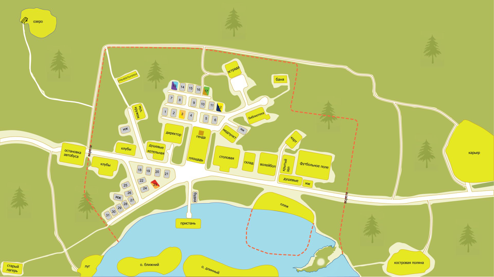

7 дней лета, билд 0.21с (отход от канона)
Страница 4 из 7 •  1, 2, 3, 4, 5, 6, 7
1, 2, 3, 4, 5, 6, 7
Стоит ли альтернативный первый день усилий по интеграции?
Re: 7 дней лета, билд 0.21с (отход от канона)
автор BlackDoomer в Пн 10 Авг 2015 - 13:16
В принципе, имеем три разных архетипа. Соответственно поведенческие реакции их различны. Лохануться, конечно, может каждый, но не в одинаковой ситуации. Для каждого архетипа ситуёвины, в которых они могут лохануться, будут совершенно разными. В начальной версии в сцене с посвящением эта особенность была подмечена совершенно правильно.

BlackDoomer- Хикка

- Сообщения : 165
Дата регистрации : 2015-07-31
Откуда : СПб
Re: 7 дней лета, билд 0.21с (отход от канона)
автор peregarrett в Пн 10 Авг 2015 - 13:20
Насчет "купился на детский прикол" - мало того,что в параллельный мир угодил, так ему еще и весь день по голове долбят. Вполне объяснимо.
Вот жаль, что нет варианта "огреть рыжую мокрой шваброй". Наверное, было бы логично, например для Герка - он у нас парень неуравновешенный.

peregarrett- Находка для шпиона

- Сообщения : 3264
Дата регистрации : 2014-09-07
Возраст : 36
Re: 7 дней лета, билд 0.21с (отход от канона)
автор BlackDoomer в Пн 10 Авг 2015 - 13:23
Ну, да. Я тоже ожидал, что Локи как-то подставит её саму, Герк или отскочит, или потом скинет рыжую в воду, ну или сделает вид, что хочет скинуть (покачать девочку на руках - тоже развлекуха).peregarrett пишет:Вот жаль, что нет варианта "огреть рыжую мокрой шваброй". Наверное, было бы логично, например для Герка - он у нас парень неуравновешенный.
BlackDoomer- Хикка
- Сообщения : 165
Дата регистрации : 2015-07-31
Откуда : СПб
Re: 7 дней лета, билд 0.21с (отход от канона)
автор nuttyprof в Пн 10 Авг 2015 - 14:34
- Правильно ли я понял ситуацию по тазику:
Есть в наличии плоская поверхность и емкость с водой.
(цитаты далее - из мода)
dv "Слушай сюда, объясняю один раз: поднимаешь, пока потолка не коснётся, а там поддеваешь щёткой. {w}Усёк?"
....
dv "Грррр… Просто сделай это, ладно? {w}Я на первый раз тебе помогу поднять до уровня крыши."
....
И несколько секунд спустя шайка оказалась плотно прижатой под днище к потолку над нами.
Шайка - не помню сейчас, какая емкость у шайки банной, но, КМК, не более 10 литров.
Если я правильно понял, Сэм с Рыжевской (которая на 10 см ниже, ЕМНИМС) вдвоем поднимают емкость до упора в потолок. Поднимали они стоя на полу (про стремянку на момент подъема речи нет) в потолок шайка уперлась - отсюда при их росте (175..185 см, где-то мелькала цифра - высота потолка 2,3..2,5 м, не более. (во мне 1,9 м. Потолок 2,5 м. Достаю пальцами рук, не подпрыгивая и не поднимаясь на носки).
- Ну и решил проверить, можно ли облиться при таком раскладе:
Допустим, что руки к концу подъема Рыжевская выпрямила полностью и упиралась при этом в дно (а не держала за ручку, что дает еще 8 см запаса), в таком случае у Сэма - запас "хода рук" - 10 см минимум, 18 см максимум (если стоять строго под шайкой и держать ее поднятыми вверх руками. То есть, он мог держать шайку, прижимая ее дно повернутыми вверх ладонями рук. Понятно, в позе "хэндэ хох" долго не выстоишь (надо рассказывать, почему?) - отсюда логично - взять Т-образный предмет (швабра, ага), короткой перекладиной подпереть дно тазика, палку взять в руки и удерживать, но в таком случае - опять же можно свободно одной рукой удерживать - второй же дотянуться до тазика и прижать его к потолку в упор второй рукой.
К чему это пишу - проведен эксперимент с казаном геометрической емкостью 15 л; воды налито было 12 л. (шайки под руками не оказалось, взял, что попалось под руку), так у казана еще и дно полусферическое и ручки по бокам меньше). Один спокойно поднял емкость, руками прижал к потолку (поднимал, правда, за дно, не за ручки), одной рукой удерживал, второй взял поданную ассистентом швабру (с полу бы швабру, естественно, не поднял), упер швабру в дно казана, перехватил обоими руками, держал 20 мин.
Затем освободил одну руку, перехватил ею дно казана, второй рукой продолжая удерживать шваброй, отбросил швабру, подпер второй рукой дно, спокойно опустил казан.
Не знаю уже, что и как там Локи и Дрищ - но Герк по сюжету не задохлик и мог вполне проделать спуск/подъем тазика и в одиночку.
Допускаю и вариант - начал опускать таз - руки затекли/соскользнула рука - перевернул таз на себя.
Нет, можно конечно, провести цирковой номер с поднятием тазика двумя людьми при помощи ДВУХ швабр на высоту, большую, чем достаешь вытянутой рукой - но это надо очень четко синхронизировать действия - иначе тазик перевернется еще в процессе подъема.
Ну, и если бы попался в такую ситуацию лично я - шваброй бы драться, конечно, не стал, но вот изловить Рыжевскую за шиворот и отправить поплавать с дебаркадера в том, в чем изловил - т. е. в одежде - это уж всяко сделал бы.

nuttyprof- Хикка
- Сообщения : 102
Дата регистрации : 2015-05-25
Возраст : 45
Откуда : Юг
Re: 7 дней лета, билд 0.21с (отход от канона)
автор peregarrett в Пн 10 Авг 2015 - 14:47
Требуем видео процесса!К чему это пишу - проведен эксперимент с казаном геометрической емкостью 15 л; воды налито было 12 л. (шайки под руками не оказалось, взял, что попалось под руку), так у казана еще и дно полусферическое и ручки по бокам меньше). Один спокойно поднял емкость, руками прижал к потолку (поднимал, правда, за дно, не за ручки), одной рукой удерживал, второй взял поданную ассистентом швабру (с полу бы швабру, естественно, не поднял), упер швабру в дно казана, перехватил обоими руками, держал 20 мин.
Затем освободил одну руку, перехватил ею дно казана, второй рукой продолжая удерживать шваброй, отбросил швабру, подпер второй рукой дно, спокойно опустил казан.
peregarrett- Находка для шпиона
- Сообщения : 3264
Дата регистрации : 2014-09-07
Возраст : 36
Re: 7 дней лета, билд 0.21с (отход от канона)
автор 7dl-kun в Пн 10 Авг 2015 - 14:54

7dl-kun- Находка для шпиона
- Сообщения : 3026
Дата регистрации : 2014-09-07
Откуда : здесь столько наркоманов?
Re: 7 дней лета, билд 0.21с (отход от канона)
автор argh в Пн 10 Авг 2015 - 18:57
argh- Маргинал

- Сообщения : 374
Дата регистрации : 2015-06-12
Re: 7 дней лета, билд 0.21с (отход от канона)
автор Arlien в Пн 10 Авг 2015 - 20:49
Arlien- Людовед

- Сообщения : 1322
Дата регистрации : 2014-09-08
Re: 7 дней лета, билд 0.21с (отход от канона)
автор BlackDoomer в Пн 10 Авг 2015 - 21:46
- вычитка:
- строка 1484: "Дойдёшь до ней забора...", видимо: "Дойдёшь по ней до забора..."
BlackDoomer- Хикка
- Сообщения : 165
Дата регистрации : 2015-07-31
Откуда : СПб
Re: 7 дней лета, билд 0.21с (отход от канона)
автор dancerh в Пн 10 Авг 2015 - 23:25
Arlien пишет:Кста, кто-нибудь проверял альтерацию на предмет равнозначности по ЛП оригиналу? А то как бы не было проблем с выходами на руты.
Через альтернативный 1 день на Мику DJ рут вышел нормально, концовка "Обязательно дождись"

dancerh- Ньюфаг

- Сообщения : 7
Дата регистрации : 2015-06-10
Возраст : 34
Re: 7 дней лета, билд 0.21с (отход от канона)
автор openplace в Вт 11 Авг 2015 - 2:10
Лена-7дл-рут. Играя за Дрища, морозясь в альтернативном дне и просев по карме, вылетел по итогу в "Разбитую ламповость". Открыв собственно текст *.rpy и произведя нехитрые подсчёты, выяснил, что если всё делать правильно, то можно получать как бэд, так и гуд-энды, а не только вылетать при помощи катапульты. Так что здесь по ЛП в смысле выхода на рут и получением концовок норма.Arlien пишет:Кста, кто-нибудь проверял альтерацию на предмет равнозначности по ЛП оригиналу? А то как бы не было проблем с выходами на руты.

openplace- Хикка
- Сообщения : 111
Дата регистрации : 2015-05-02
Re: 7 дней лета, билд 0.21с (отход от канона)
автор XOLODOS в Вт 11 Авг 2015 - 13:40

XOLODOS- Сыч

- Сообщения : 66
Дата регистрации : 2015-07-31
Возраст : 24
Откуда : Россия, Смоленская обл. г.Починок
Re: 7 дней лета, билд 0.21с (отход от канона)
автор openplace в Вт 11 Авг 2015 - 15:13
Графической частью - да. Без растровой основы 7дл-куна и программной реализации nuttyprof её не было бы.XOLODOS пишет:Openplace, а эт вы картой новой занимаетесь?
openplace- Хикка
- Сообщения : 111
Дата регистрации : 2015-05-02
Re: 7 дней лета, билд 0.21с (отход от канона)
автор nuttyprof в Вт 11 Авг 2015 - 18:31
7dl-kun пишет:
.....
Вкратце, ТЗ следующее: необходима реализация функции десатурации, возможно, частичного тинта картинки подобного тому, что мы видим здесь (насыщенность -0.5, тинт 0.95, 0.2, 0.2, яроксть -0.2) - но без необходимости обращаться к каждой картинке отдельно или красить каждую картинку отдельно.
......
Нечто в духе
scene %картинка%:
%оператор, вызывающий нужные свойства картинки%
.....
Отдельно каждой картинке приписывать нуар-версию, пусть и программными методами, я не хочу, я хочу как раз вызываемую функцию, что-то вроде применяемого фильтра поверх изображения.
- Правильно ли я понял:
Есть некоторое исходное изображение.
Где-то оно должно показываться в исходном состоянии, а при необходимости (в определенных случаях) - с изменением цвета/насыщенности и т. п.
"Перекрашенную" копию изображения физически не создаем, обрабатываем средствами Ренпая.
В данный момент дело решается так (насколько я понял) - в блоке init прописывается функция, выполняющая необходимые издевательства над исходным изображением (измененное изображение вроде бы сохраняется где-то в кэше) и, при необходимости, это измененное изображение вызывается в нужном месте - обрабатывать так каждую картинку слишком нудно и громоздко, но работает.
- Думаю, надо пробовать:
1. В принципе, в Ренпае для show, scene предопределено несколько опций показа, но они, как я понял, касаются переходов сцен друг в друга.- Код:
show %картинка% with %эффект%(%параметры%)
scene bg %картинка% with %эффект%(%параметры%)
Насколько я понял, в вышеописанном случае, на экран сцена выводится не оператором scene (он картинку подготавливает), а оператором with.
Не вполне уверен, что это будет работать вне блока init , но можно попробовать определить оператор, перекрашивающий нашу картинку.
(если все картинки перекрашивать по одному шаблону - параметры задаем при определении оператора;
если нужно обрабатывать каждую картинку по-своему - придется передавать параметры при вызове).
2. Если 1 вариант не взлетит:
в блоке init прописываем две функции:
а) создающую в кэше (не на диске) копии перекрашиваемых картинок с префиксом/суффиксом: %картинка% -> %картинка_нуар%
(переименовываем пакетом, одной строкой);
б) по образцу и подобию фильтров реколора (опять же пакетом) перекрашиваем нуарные картинки.
Жирный минус - изображения при пакетном способе перекрасятся все одинаково.
В нужных местах - вызываем картинку с перфиксом/суффиксом)
nuttyprof- Хикка
- Сообщения : 102
Дата регистрации : 2015-05-25
Возраст : 45
Откуда : Юг
Re: 7 дней лета, билд 0.21с (отход от канона)
автор 7dl-kun в Вт 11 Авг 2015 - 18:59
scene bg ext_square_day with/at noired
где noired - та самая функция.
Пока ищу, не могу найти.
7dl-kun- Находка для шпиона
- Сообщения : 3026
Дата регистрации : 2014-09-07
Откуда : здесь столько наркоманов?
Re: 7 дней лета, билд 0.21с (отход от канона)
автор peregarrett в Вт 11 Авг 2015 - 19:06
- Код:
scene expression Noired("bg ext_square_day")
peregarrett- Находка для шпиона
- Сообщения : 3264
Дата регистрации : 2014-09-07
Возраст : 36
Re: 7 дней лета, билд 0.21с (отход от канона)
автор 7dl-kun в Вт 11 Авг 2015 - 19:17
7dl-kun- Находка для шпиона
- Сообщения : 3026
Дата регистрации : 2014-09-07
Откуда : здесь столько наркоманов?
Re: 7 дней лета, билд 0.21с (отход от канона)
автор peregarrett в Вт 11 Авг 2015 - 19:21
Если вызов в таком виде устраивает - попробую вечером выдать прототип.
peregarrett- Находка для шпиона
- Сообщения : 3264
Дата регистрации : 2014-09-07
Возраст : 36
Re: 7 дней лета, билд 0.21с (отход от канона)
автор XOLODOS в Вт 11 Авг 2015 - 20:51
XOLODOS- Сыч
- Сообщения : 66
Дата регистрации : 2015-07-31
Возраст : 24
Откуда : Россия, Смоленская обл. г.Починок
Re: 7 дней лета, билд 0.21с (отход от канона)
автор 7dl-kun в Вт 11 Авг 2015 - 21:33
7dl-kun- Находка для шпиона
- Сообщения : 3026
Дата регистрации : 2014-09-07
Откуда : здесь столько наркоманов?
Re: 7 дней лета, билд 0.21с (отход от канона)
автор XOLODOS в Вт 11 Авг 2015 - 22:36
- Спойлер:
- [img]

[/img]" />
XOLODOS- Сыч
- Сообщения : 66
Дата регистрации : 2015-07-31
Возраст : 24
Откуда : Россия, Смоленская обл. г.Починок
Re: 7 дней лета, билд 0.21с (отход от канона)
автор nuttyprof в Ср 12 Авг 2015 - 1:03
7dl-kun пишет:Да, именно программными методами и не ручками каждую картинку, а некой вызываемой функцией, на лету, в коде. Что-то вроде:
scene bg ext_square_day with/at noired
где noired - та самая функция.
Пока ищу, не могу найти.
Хорошие новости - изображения "на лету" вполне поддаются перекраске и прочим издевательствам встроенными методами im.ХХХХХХ.
- Плохие новости:
Методы im.ХХХХХХ (а также и процедуры, определяемые на основе этих методов) не хотят воспринимать в качестве аргумента %имя_картинки%, ранее определенное в init'е:
image %имя картинки% = get_image_7dl("%путь к файлу картинки/картинка.jpg"), т. е. пытаются найти файл %имя картинки%, его, естественно, не находят; им подавай путь к картинке.
например, имеем:
image %имя картинки% = get_image_7dl("%путь к файлу картинки/картинка.jpg")
.......
im.хххх (get_image_7dl("%путь к файлу картинки/картинка.jpg")) - работает
im.хххх ("%имя картинки%") - работать отказывается, пишет "не найден файл %имя картинки%".
Буду копать дальше.
nuttyprof- Хикка
- Сообщения : 102
Дата регистрации : 2015-05-25
Возраст : 45
Откуда : Юг
Re: 7 дней лета, билд 0.21с (отход от канона)
автор peregarrett в Ср 12 Авг 2015 - 1:48
- Код:
init python:
def Noir(id):
return im.MatrixColor(ImageReference(id), im.matrix.brightness(-0.2) * im.matrix.tint(0.95, 0.2, 0.2) * im.matrix.saturation(-0.5))
label test__Noir_Effect:
scene ext_bus1
"А сейчас - "
"ЭФФЕКТ!!"
scene expression Noir("ext_bus1")
"Вот."
return
вот так перекрасил автобус

Кажется, с параметрами преобразования напутал...
Самый главный кусок - функция ImageReference, которая возвращает зарегистрированный Image по его имени.
peregarrett- Находка для шпиона
- Сообщения : 3264
Дата регистрации : 2014-09-07
Возраст : 36
Re: 7 дней лета, билд 0.21с (отход от канона)
автор Гость в Ср 12 Авг 2015 - 2:14
Гость- Гость
Re: 7 дней лета, билд 0.21с (отход от канона)
автор DJ_DAD в Ср 12 Авг 2015 - 10:29
- оффтоп:
- это автобус из пролога дрища


DJ_DAD- Сыч
- Сообщения : 24
Дата регистрации : 2015-03-02
Возраст : 24
Страница 4 из 7 • 1, 2, 3, 4, 5, 6, 7